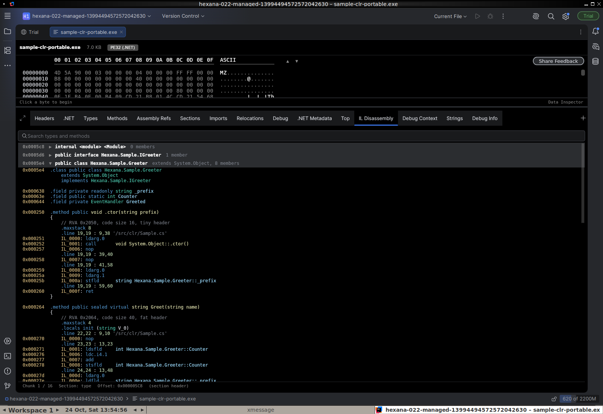
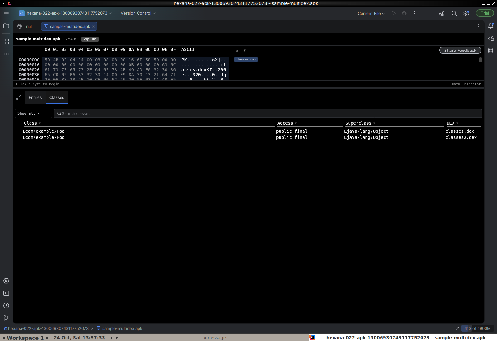
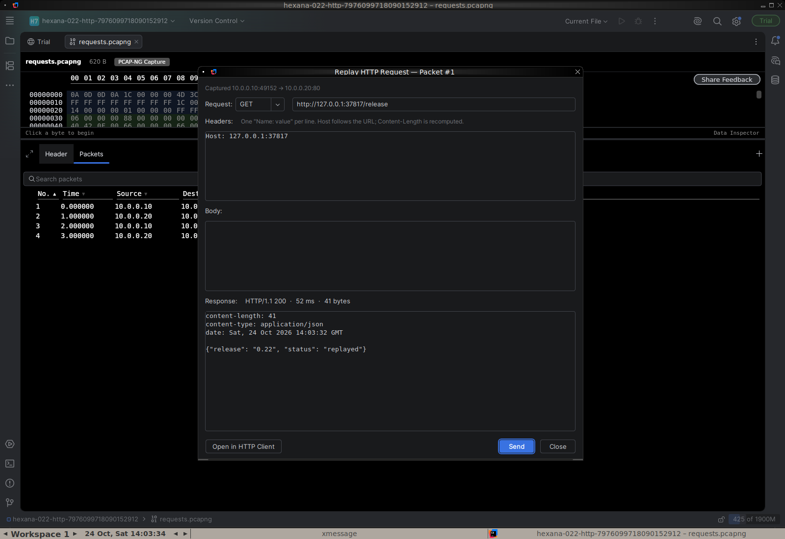

Hexana update
What's New in Hexana 0.22
Hexana 0.22 focuses on .NET, Android, and Network captures while refining binary inspection inside JetBrains IDEs.
.NET
Read managed code, from metadata to IL
Inspect .NET assembly identity, types and methods, expand resolved IL instructions, and trace code back to matching Portable PDB source lines. The Top tab attributes IL, metadata and ReadyToRun bytes.
- .NET assemblies. PE files with a CLR runtime header (
.dll/.exebuilt for .NET or .NET Framework) are labelledPE32 (.NET)and get managed-code tabs: .NET (runtime header flags, platform target, entry point, target framework, ReadyToRun, assembly identity and MVID), Types (every type definition with its kind, modifiers and base type; expand a type to see its fields and methods with decoded C#-style signatures), Methods (signature, modifiers, RVA and IL size; selecting one highlights its IL body) and Assembly Refs (versions and public key tokens). A .NET Metadata tab groups the lower-level views: metadata streams, tables with row counts, type and member references, user strings (ldstrliterals) and embedded resources. - IL Disassembly tab for .NET assemblies: an ILDasm-style listing with one foldable section per type (fields, then every method with
.maxstack,.locals, its instructions and.tryclauses). Call targets, fields, types andldstrliterals are resolved to names, including generic instantiations such asBox<int>::Map<string>. - Top tab for .NET assemblies breaks every section down by what owns its bytes: ReadyToRun native code per method (namespace → type → method, generic instantiations included, and code compiled in from other assemblies grouped by assembly), ReadyToRun tables, IL method bodies, metadata streams and tables, managed resources and PE data directories, with alignment padding and anything left over shown separately so a section's rows always add up.
- Source lines from PDBs. When a PE image's PDB is next to it (under the name its CodeView record gives, or the image's own name) and is the one the image was built with — same GUID and age for a Windows PDB, same GUID and timestamp for a Portable PDB — Hexana loads it: the Disassembly tabs show the source line of each instruction, and a Debug Info tab summarizes the line table. For .NET assemblies a matching Portable PDB — or one embedded in the assembly with
-debug:embedded— adds ILDasm-style.linedirectives to IL Disassembly and a Source column (Program.cs:42) to Methods.

Android
Browse every class in an APK
Open one Classes tab across all DEX files, filter by DEX, and reveal a class in its original DEX editor.
- Classes tab for
.apkfiles listing every class across all of the archive's DEX files (classes.dex,classes2.dex, …), with a filter per DEX file. The DEX files are only read once the tab is opened, and off the UI thread.

Network captures
Turn captured requests into live requests
Edit a captured HTTP request and resend it from the Packets tab. Inspect the response in the same window, or export the request to the bundled HTTP Client when available.
- Replay HTTP requests from a PCAP. Right-click an HTTP request row in a capture's Packets tab and choose Replay HTTP Request… to edit the method, URL, headers and body and send it again; the response (status, headers, decompressed body) shows in the same window, which stays open so the request can be tweaked and re-sent. Cleartext requests are reassembled across TCP segments, skipping retransmissions; HTTPS requests work once an SSL key log decrypts them (one TLS record's worth of body).

Also in 0.22
- Decode managed resource sets Inspect standalone .resources files and embedded resource sets, including decoded values and byte or stream content types.
- Inspect Windows and Portable PDBs Browse symbol metadata, streams and source files. Matching symbols beside a PE image add source lines to disassembly and explain their match in Debug Context.
- Run APKs with an existing Android SDK Launch an on-disk APK on a running emulator or an existing AVD when the local Android SDK has the emulator package.